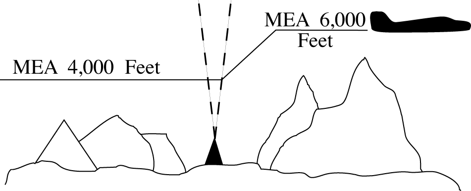
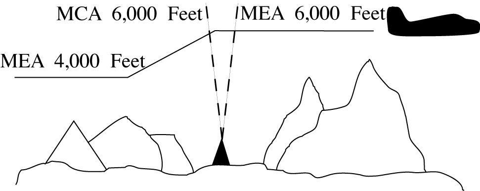

Altitude blocks as requested. Any altitude or flight level
050B080,
FL 180B220, FL 280B310
4-5-3. EXCEPTIONS
When traffic, meteorological conditions, or aircraft operational limitations prevent assignment of altitudes prescribed in paragraph 4-5-2, Flight Direction, assign any cardinal altitude or flight level below FL 410 or any odd cardinal flight level at or above FL 410 without regard to direction of flight as follows:
For traffic conditions, take this action only if one of the following conditions exists:
Aircraft remain within a facility's area and prior approval is obtained from other affected positions or sectors or the operations are covered in a Facility Directive.
Aircraft will proceed beyond the facility's area and specific operations and procedures permitting random altitude assignment are covered in a letter of agreement between the appropriate facilities.
Military aircraft are operating on random routes and prior approval is obtained from the facility concerned.
For meteorological conditions, take this action only if you obtain prior approval from other affected positions or sectors within your facility and, if necessary, from the adjacent facility concerned.
For aircraft operational limitations, take this action only if the pilot informs you the available appropriate altitude exceeds the operational limitations of his/her aircraft and only after you obtain prior approval from other affected positions or sectors within your facility and, if necessary, from the adjacent facility concerned.
For mission requirements, take this action only when the aircraft is operating on an MTR.
4-5-4. LOWEST USABLE FLIGHT LEVEL
If a change in atmospheric pressure affects a usable flight level in your area of jurisdiction, use TBL 4-5-2 to determine the lowest usable flight level to clear aircraft at or above 18,000 feet MSL.
TBL 4-5-2Lowest Usable FL
Altimeter Setting
Lowest Usable FL
29.92” or higher
180
29.91” to 28.92”
190
28.91” to 27.92”
200
4-5-5. ADJUSTED MINIMUM FLIGHT LEVEL
When the prescribed minimum altitude for IFR operations is at or above 18,000 feet MSL and the atmospheric pressure is less than 29.92”, add the appropriate adjustment factor from TBL 4-5-3 to the flight level equivalent of the minimum altitude in feet to determine the adjusted minimum flight level.
TBL 4-5-3Minimum FL Adjustment
Altimeter Setting
Adjustment Factor
29.92” or higher
None
29.91” to 29.42”
500 feet
29.41” to 28.92”
1,000 feet
28.91” to 28.42”
1,500 feet
28.41” to 27.92”
2,000 feet
4-5-6. MINIMUM EN ROUTE ALTITUDES (MEA)
Except as provided in subparagraphs a and b below, assign altitudes at or above the MEA for the route segment being flown. When a lower MEA for subsequent segments of the route is applicable, issue the lower MEA only after the aircraft is over or past the Fix/NAVAID beyond which the lower MEA applies unless a crossing restriction at or above the higher MEA is issued.
An aircraft may be cleared below the MEA but not below the MOCA for the route segment being flown if the altitude assigned is at least 300 feet above the floor of controlled airspace and one of the following conditions is met:
For aircraft using VOR, VORTAC or TACAN for navigation, this applies only within 22 miles of that NAVAID.
When radar procedures are used, the following actions are taken:
In the absence of a published MOCA, assign altitudes at or above the MVA or MIA along the route of flight, and
Lost communications instructions are issued.
The aircraft is GNSS equipped.
An aircraft may be cleared to operate on jet routes below the MEA (but not below the prescribed minimum altitude for IFR operations) or above the maximum authorized altitude if, in either case, radar service is provided.
Where a higher altitude is required because of an MEA, the aircraft must be cleared to begin climb to the higher MEA as follows:
If no MCA is specified, prior to or immediately after passing the fix where the higher MEA is designated. (See FIG 4-5-1)
FIG 4-5-1No MCA Specified

If a MCA is specified, prior to the fix so as to cross the fix at or above the MCA. (See FIG 4-5-2)
FIG 4-5-2MCA Specified

GNSS MEAs may be approved on published ATS routes. Air traffic may assign GNSS MEAs to GNSS‐equipped aircraft where established.
Where MEAs have not been established, clear an aircraft at or above the minimum altitude for IFR operations prescribed by 14 CFR section 91.177.
4-5-7. ALTITUDE INFORMATION
Issue altitude instructions as follows:
Altitude to maintain or cruise. When issuing cruise in conjunction with an airport clearance limit and an unpublished route will be used, issue an appropriate crossing altitude to ensure terrain clearance until the aircraft reaches a fix, point, or route where the altitude information is available to the pilot. When issuing a cruise clearance to an airport which does not have a published instrument approach, a cruise clearance without a crossing restriction may be issued.
Instructions to climb or descend including restrictions, as required. Specify a time restriction reference the UTC clock reading with a time check. If you are relaying through an authorized communications provider, such as New York Radio, San Francisco Radio, FSS, etc., advise the radio operator to issue the current time to the aircraft when the clearance is relayed. The requirement to issue a time check must be disregarded if the clearance is issued via Controller Pilot Data Link Communications (CPDLC).
EXCEPTION. If you are in direct, two-way, VHF/UHF voice communication with the pilot and the aircraft is in radar contact, you may specify an elapsed time interval restriction, in full minute increments only, without any reference to the UTC clock. The time restriction begins once the clearance has been acknowledged by the pilot.
Specified altitude for crossing a specified fix or waypoint; or, specified altitude for crossing a distance (in miles) and direction from a specified fix or waypoint.
A specified altitude over a specified fix for that portion of a descent clearance where descent at pilot's discretion is permissible. At any other time it is practicable, authorize climb/descent at pilot's discretion.
When a portion of a climb/descent may be authorized at the pilot's discretion, specify the altitude the aircraft must climb/descend to followed by the altitude to maintain at the pilot's discretion.
When the “pilot's discretion” portion of a climb/descent clearance is being canceled by assigning a new altitude, inform the pilot that the new altitude is an “amended altitude.”
Altitude assignments involving more than one altitude.
Instructions to vertically navigate SIDs/STARs with published crossing restrictions (Climb Via/Descend Via).
When established on the SID/STAR.
When navigating a published route inbound to the STAR.
When cleared direct to a waypoint/fix without a published altitude, assign a crossing altitude.
After a “climb via” or “descend via” clearance has been issued, if the aircraft is cleared direct to a waypoint/fix, the “climb via” or “descend via” clearance must be restated. The name of the SID or STAR does not need to be restated.
When vectoring or approving an aircraft to deviate, state an altitude to maintain and advise the pilot if you intend on clearing the aircraft to resume the “climb via” or “descend via” procedure.
A “descend via” clearance must not be used where procedures contain only published “expect” altitude and/or speed restrictions.
“Descend via” may be used on procedures that contain both “expect” and required altitude and speed restrictions only if altitude and/or speed restrictions or alternate restrictions are issued for the fix/waypoint associated with all expect restrictions.
“Descend via” clearances may also be issued if an aircraft is past all fixes/waypoints that have expect restrictions.
If it is necessary to assign a crossing altitude which differs from the STAR or SID altitude, emphasize the change to the pilot.
When an aircraft has been issued an interim altitude and after departure ATC can subsequently clear the aircraft to climb to the original top altitude published in a SID that contains published crossing restrictions, instruct aircraft to “climb via SID.” When issuing a different altitude and compliance with published restrictions is still required, instruct aircraft to “climb via SID except maintain (altitude).”
If it is necessary to assign an interim altitude or assign a bottom or top altitude not contained on a STAR or SID, the provisions of subparagraph 4-5-7h may be used in conjunction with subparagraph 4-5-7a.
When a pilot is unable to accept a clearance, issue revised instructions to ensure positive control and approved separation.
4-5-8. ANTICIPATED ALTITUDE CHANGES
If practicable, inform an aircraft when to expect climb or descent clearance or to request altitude change from another facility.
4-5-9. ALTITUDE CONFIRMATION- NONRADAR
Request a pilot to confirm assigned altitude on initial contact and when position reports are received unless:
The pilot states the assigned altitude, or
You assign a new altitude to a climbing or descending aircraft, or
TERMINAL. The aircraft was transferred to you from another sector/position within your facility (intrafacility).